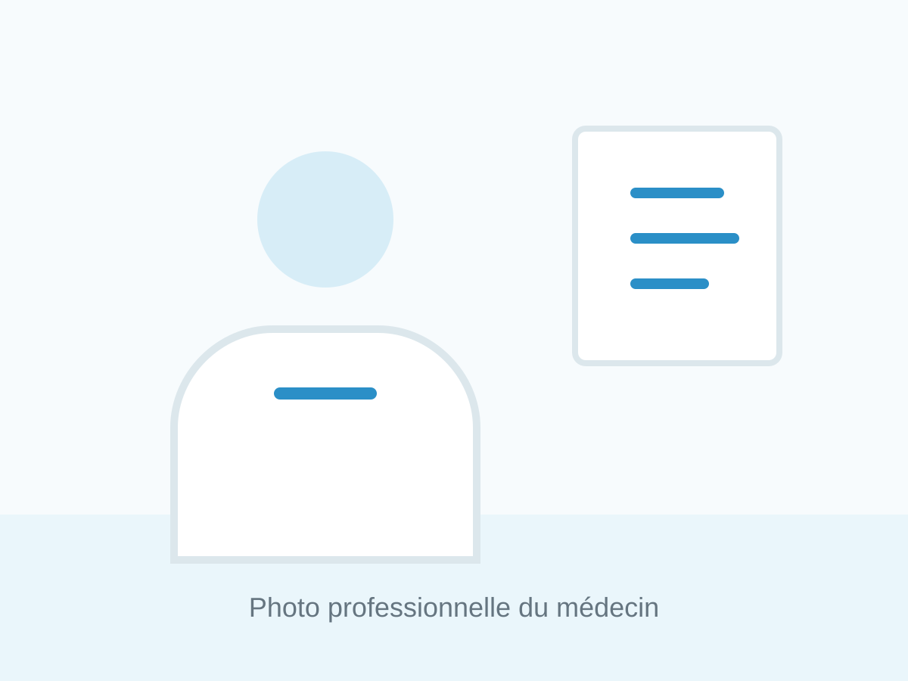
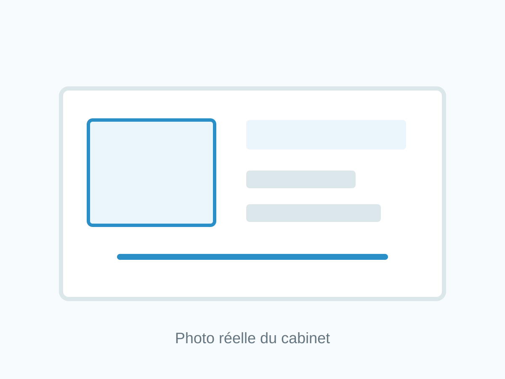

Consultation ophtalmologique
Bilan visuel, renouvellement lunettes et examen complet.
Conventionné secteur 1

Accueil des patients adultes
Le Dr Musaab Abu Bakr accueille les patients adultes pour le dépistage, le diagnostic et le suivi des maladies oculaires. Son approche repose sur l'écoute, la rigueur médicale et une information claire du patient.

Domaine d'activité
Bilan visuel, renouvellement lunettes et examen complet.
Dépistage, mesure de la pression intraoculaire et suivi.
Fond d'oeil, surveillance de la rétine et orientation adaptée.
Diagnostic, orientation chirurgicale, paupières, orbites et chirurgie réfractive.
Le cabinet
Patients internationaux
Consultations available in English.
الاستشارات متوفرة باللغة العربية.
Consultațiile pot fi efectuate și în limba română.
Informations pratiques